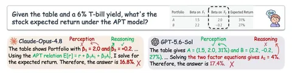

Разбираем статью, в которой авторы исследуют, почему RL хорошо улучшает ризонинг мультимодальных моделей, но гораздо хуже справляется с визуальным восприятием. Исправить это предлагают через дистилляцию аттеншна.
Первая интересная идея — ошибки на визуальных бенчмарках не обязательно связаны со способностями, которые они проверяют. Например, модель может ошибаться не из-за плохого ризонинга, а потому, что неправильно считывает информацию с изображения.
Чтобы разделить эти случаи, предлагают PARA — метод оценки perception и reasoning headroom, то есть доли ошибок, которые можно исправить улучшением соответствующей способности.
Для этого используют две сильные референсные модели — Claude Opus 4.8 и GPT-5.6-Luna — и проводят два эксперимента:
• Perception Intervention. Сильная модель подробно описывает изображение, а исходная VLM повторно решает задачу с этим описанием (отдельно или вместе с оригинальной картинкой).
• Reasoning Intervention. Исходная VLM описывает изображение, а сильная модель решает задачу только по описанию. Дополнительно проверяют, что референсная модель сама способна решить задачу по оригинальному изображению.
Важный момент — PARA оценивают всего на 200 примерах каждого бенчмарка из-за вычислительных ограничений. Как конкретно отбирали эти примеры, описано в статье.
При этом набор бенчмарков интересный: BLINK, PerceptionBench, VisNumBench, HallusionBench, LogicVista, MathVista, MathVerse и другие — всего 17. Оказывается, боттлнек зависит от конкретной модели: так, на MME у Qwen преобладает reasoning headroom, а у Gemma — perception.
Дальше авторы показывают, что обычный RL лучше использует reasoning headroom. Прирост от RL снижается, когда больше ошибок исправимо улучшением perception, и растёт, когда преобладают боттелнеки в ризонинге.
Авторы связывают это с тем, что награда за итоговый результат не различает ошибки восприятия и рассуждения. А методы вроде Vision-SR1 и VPPO влияют на визуальное внимание лишь косвенно, через изменение advantage и градиентов по логитам выходных токенов.
Чинить это предлагают с помощью GRAD — Group-Relative Attention Distillation.
В OPAD неуспешный роллаут отталкивается от своего предыдущего аттеншна. Но ведь модель могла правильно посмотреть на изображение и ошибиться уже в ризонинге!
GRAD вместо этого заставляет роллауты с отрицательным advantage перенимать визуальный аттеншн лучшего роллаута из той же группы. Чем хуже роллаут, тем сильнее дистилляция. Внешний учитель и дополнительные аннотации не нужны.
В результате GRAD улучшает средний score относительно GRPO на +2,9/2,5 пункта усреднённой метрики для Qwen3-VL-2B/4B и превосходит Vision-SR1, VPPO и OPAD по среднему результату. Perception headroom снижается на пять из семи бенчмарков против двух у GRPO.
Если выбирать случайный роллаут вместо лучшего, Avg. падает с 49,4 до 45,5 — даже ниже GRPO. Лучше всего работает supervision только последнего слоя декодера с λ = 1.
Что вызывает вопросы
Лучший по реворду роллаут необязательно обладает лучшим визуальным аттеншном — правильный ответ может получиться благодаря ризонингу или случайной догадке. Кроме того, снижение PH после обучения может объясняться изменением состава оставшихся ошибок, а не только улучшением perception.
Самое интересное в работе — использование собственных успешных роллаутов модели как источника supervision для визуального восприятия. Более общий вывод: научить VLM правильно отвечать и научить её действительно лучше воспринимать изображения — не одно и то же.
Хочется отметить качество экспериментальной части: авторы провели подробные аблейшны, привели гиперпараметры и настройки обучения. А в приложении оставили достаточно деталей, чтобы разобраться в реализации метода и попробовать воспроизвести результаты.
Разбор подготовила
CV Time
